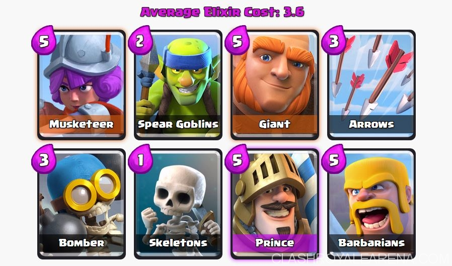
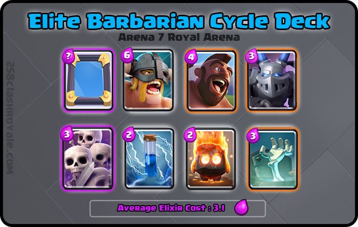
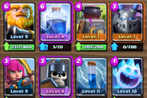

Ethan's Clash Royal Arena
Decks
Hello guys, In this page, I will tell you some great decks that are well balanced!

- Giant: Your main tanker. Use him to tank for the power units.
- Barbarians/Knight: The Knight acts as a secondary tanker behind the Giant. Barbarians should be better, as they can be used on offense AND defense, and there are four of them. However, Knight takes 2 elixir less to play.
- Bomber/Wizard/Dragon: splash damagers. Use them against scarmy swarms.
- Musketeer: Use her to defend big troops, then use a tanker and push.
- Spear Goblins/Archers/Minions: They are extremely effective on both offense and defense. Can be played to cycle through your deck.
- Skeletons/Goblins: The same reason as above.
- Arrows/Zap: Arrows can destroy squishy units better than Zap unless Zap is high-leveled. Use this to gain the elixir advantage.
- Prince: Main damage dealer. With his high dps, he wrecks towers.

Alternatives: Mirror with ice golem or fireball, Megaminion with minions or muscateer, zap with the log, and fire spirits with the ice spirit.
Usable after arena 7 or up
This is a very offensive deck. Play aggressively, pushing hard every time. A good time to push is when your opponent drops a high elixer card (tanks or elixer collector). This is to keep the pressure on the opponent and prevent them from building a big push. When your opponent uses the counter for the hog at the elite barbarian push (barbarians or canon), then push them with the hog. Overall the deck is very simple to use, defend with the support cards then counter push with Elite Barbarians/Hog Rider, cycle then repeat. Use skeleton army or elite barbs to defend against tanks.

- Royal Giant: We all know what this bad boy does – remember, the key to winning is to spam this down (not at the cost of defense) as often as possible. Sometimes if you find yourself under a lot of pressure, people stop putting the Royal Giant down because of the high Elixir cost, but remember, it will cause them to spend on defense as well so it’s good to get this down as often as safely possible.
- furnance: An absolutely key defensive unit within this game. Takes out swarms for a positive trade. The building itself is very useful to put down against Hogs.
- Lightning: This spell needs to be used carefully. If you are playing against an enemy with Inferno Tower – play your Royal Giant from the back and gather enough Elixir to play your lightening over the enemy tower and the Inferno Tower as soon as he puts it down.
Zap can be replaced with the log, guards with the skeleton army, archers with princess, and Ice spirits with fire spirits.
If you want to learn more about clash royal decks:
Click Here to check out my first ledgendary deck, the xbow siege
Click Here to check out my second ledgendary deck, the poison graveyard deck.
Click Here to learn how to build a well ballenced deck
Click Here to learn more about deck archtypes